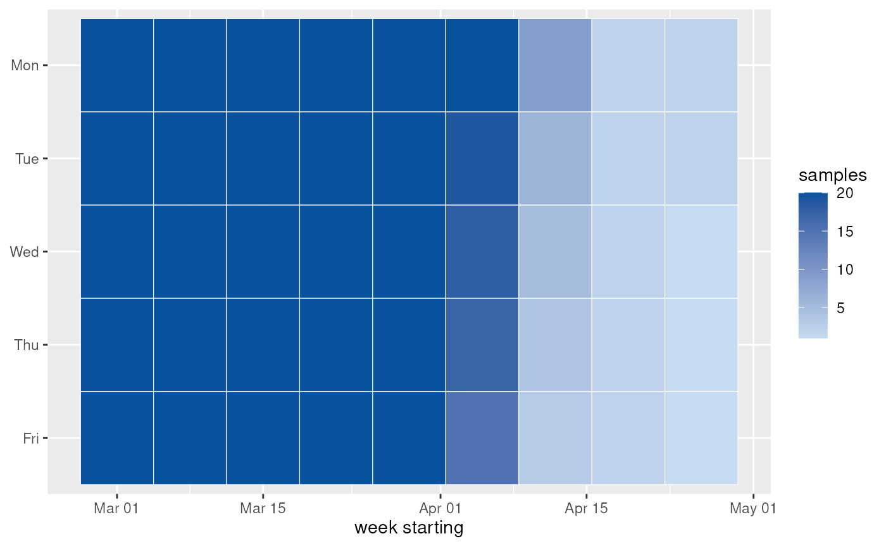
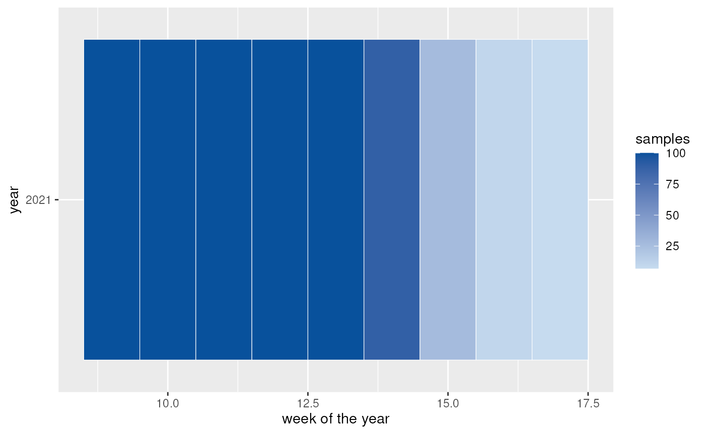

Plot sample counts on a calendar
Source:R/AllGenerics.R, R/plotCalendar.R, R/zzz-mae.R
plotCalendar.RdplotCalendar() counts the samples taken on each day or in each
week and draws them as calendar tiles: weeks by weekday, or years by
week of the year.
Usage
plotCalendar(x, ...)
# S4 method for class 'SummarizedExperiment'
plotCalendar(x, time.col, unit = c("day", "week"), ...)
# S4 method for class 'MultiAssayExperiment'
plotCalendar(x, ..., experiment = 1L)Arguments
- x
a
SummarizedExperimentobject.- ...
additional arguments passed to
geom_tile.- time.col
Character scalar. Specifies the column fromcolData(x)that contains sampling dates, of classDate, or times of classPOSIXct, counted on their date in their time zone.- unit
Character scalar. Counts samples per day, with weeks on the x axis and weekdays on the y axis ("day"), or per week, with the ISO week on the x axis and the year on the y axis ("week"). (Default:"day")- experiment
Character scalarorinteger scalar. For aMultiAssayExperiment, the experiment to plot; its samples get thecolDataofx. (Default:1L)
Examples
# Daily sampling of 20 people; study days placed on an arbitrary
# calendar starting on 1 March, with no samples at weekends
data("temporalMicrobiome20", package = "miaTime")
tse <- temporalMicrobiome20
tse$date <- as.Date("2021-03-01") + tse$day - 1
tse <- tse[, !format(tse$date, "%u") %in% c("6", "7")]
plotCalendar(tse, time.col = "date")

# Samples per week of the year
plotCalendar(tse, time.col = "date", unit = "week")
